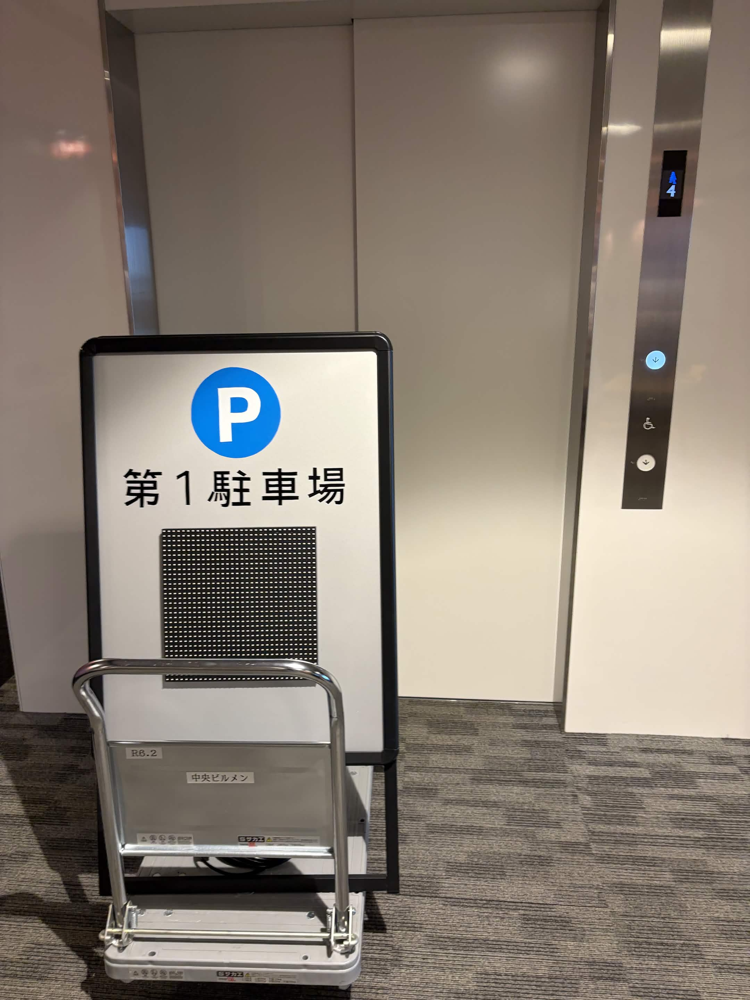
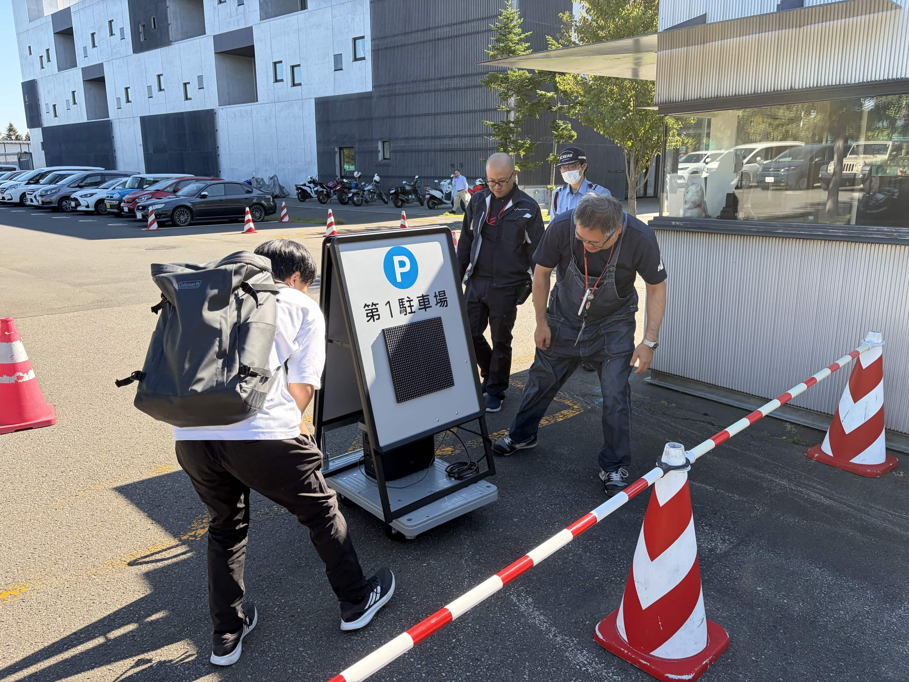
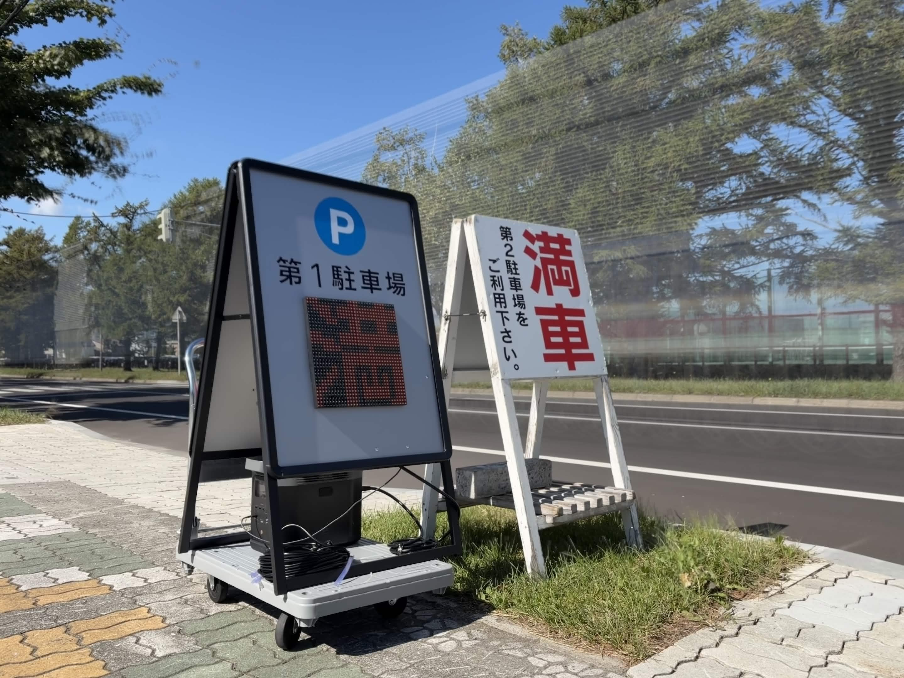
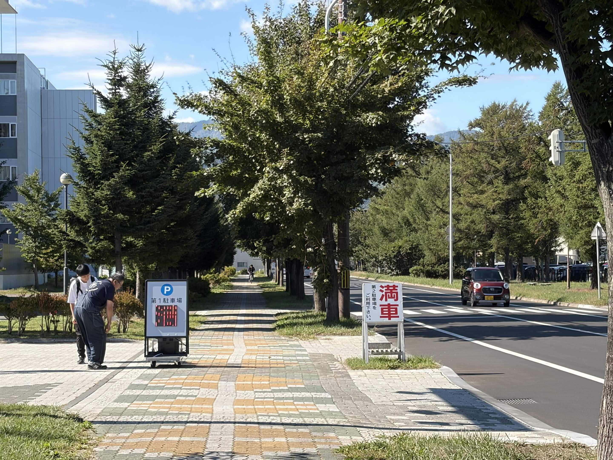
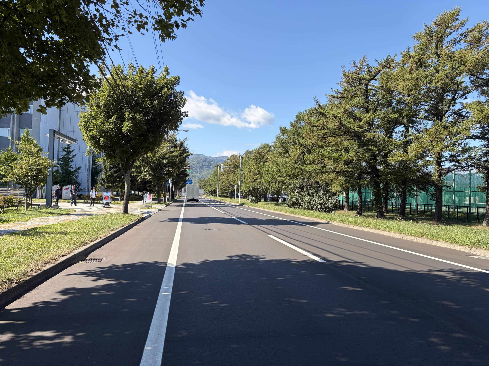

看板を仮設置してみた
筆者:E
防水加工はどうしたの❓って感じだけど、今回は管財課の方にお願いしてポータブル電源を貸してもらい、外での視認性確認をしました。
台車を借りる
A棟1階の階段裏にある台車(知らなかった)を借りて、看板のある場所まで移動しました。
なんかモバイルバッテリー切れてるんだけど？！ 前回esp32に接続しっぱなしで電力を消耗してたっぽい泣
まあなんとかなるだろ。そうして、看板を台車に乗せて慎重に運び出します。配線が外れないかヒヤヒヤする。

仮設置
初めて外に出て感動している看板君を押しながら、第１駐車場入口付近まで持っていきます。
警備室に着くと先ほどの管財課の方と警備の方々がいました。
管財課の方のポータブル電源を借りて、AC100V電源を接続すると予想通りのリアクションが来ました！（嬉しい）
移動でケーブル類外れなくてよかった...

wifi通信の弱点
esp32で鯖立てして、wifi接続して操作をすることはできたのだが、問題は距離だ。
看板との距離が遠いとすぐに切れてしまう。これはアカン。
とりあえず光らせた
看板を置いてみた。外だからシャッタースピードが短くなってLEDがまともに映せない。
とりあえず長時間露光で撮ってみた。(ちょっとブレてる)

Q.外でも見える？
A.今日は快晴です。でもみた感じ大丈夫そう。
逆に夜とか雨の時は明るすぎるかもしれないから、輝度値を下げれば大丈夫だろう。
Q.遠くからの視認性どうなんだろう。
A.遠くから見ても赤い表示が見える。赤ければ満車だから分かるだろう。

Q.運転者目線で見える？
A.敷地問題があるので、常設するとすればちょっと大学寄りになるだろう。木の隙間から見えそう。

工事の必要性
実は警備員室の中に電源があるが、延長コードを使うよりいい方法がないか探っている。
(延長コードを使うとコードの上を通過する車がいるためよろしくない)
AC100Vのポータブル電源を使うか、別の電圧の電源を使うか、色々試す必要がありそう。
大学に認められた時に、工事が可能なのかもしれない。